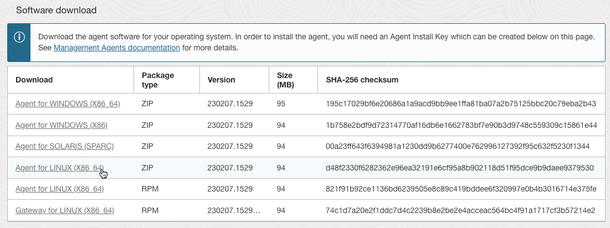
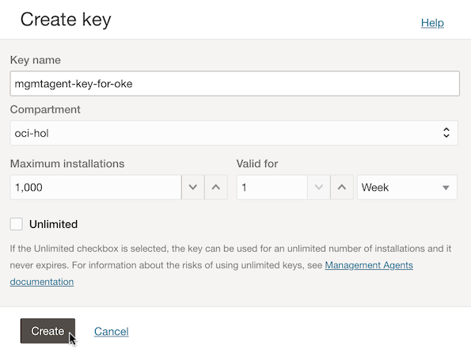
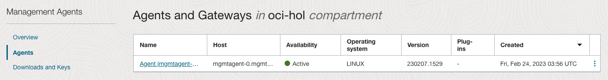
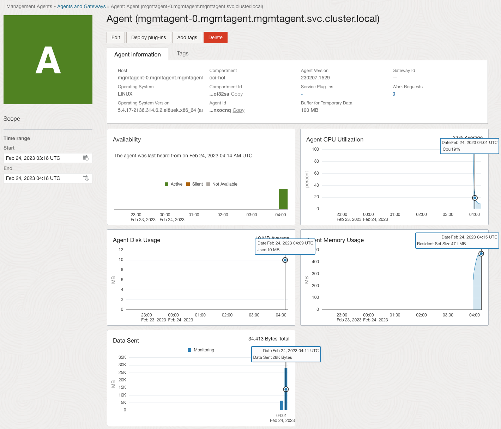
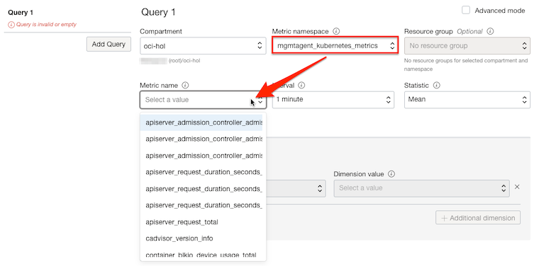
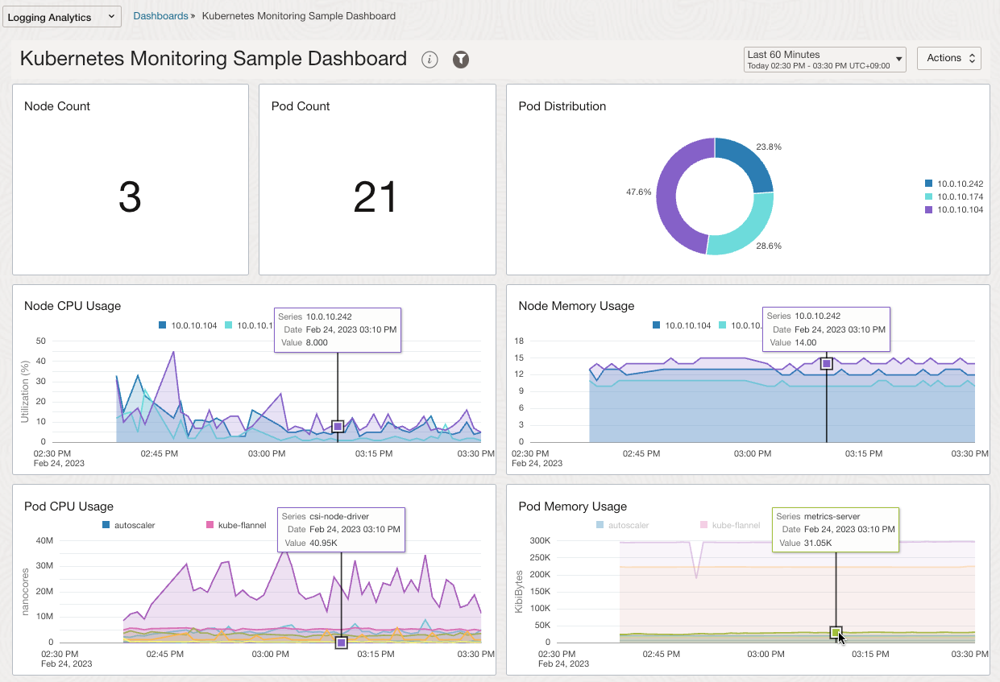
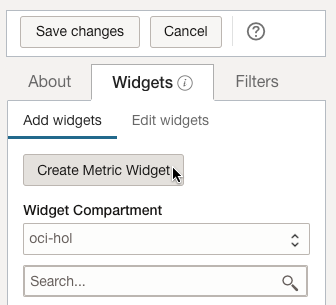
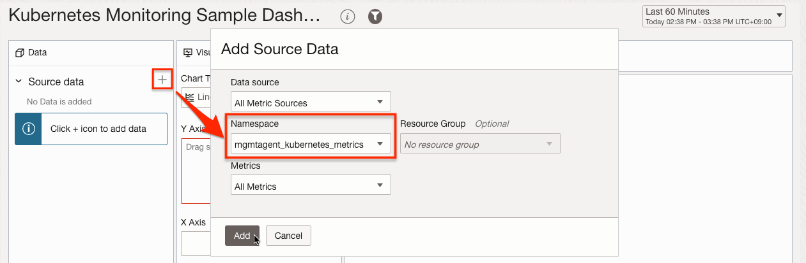
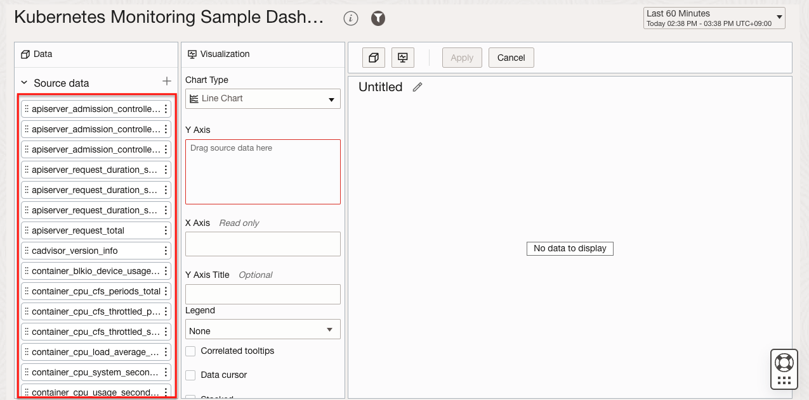

1.5.2.2.2 Management Agent를 사용한 모니터링
애플리케이션에서 내보내는 메트릭 정보를 수집할 수 있는 OCI Management Agent를 GitHub 저장소를 통해 제공합니다. 쿠버네티스를 위해서 Helm Chart 형식으로 제공하며, OKE에 설치하여 OKE 클러스터에서 수집되는 메트릭 정보를 OCI Logging Analytics를 통해 모니터링할 수 있습니다.
설치를 위해 필요한 도구
아래 도구가 필요하고 대상 OKE 클러스터에 접근이 가능해야 합니다. 아래 모든 툴이 설치되어 있는 cloud shell을 사용하면 편리합니다.
- OCI CLI
- kubectl
- helm
- OKE Cluster
관련 Policy 설정필요
방법 #1. Dynamic Group 방식 사용하기
-
Management Agent에 대한 Dynamic Group을 만듭니다. OKE 클러스터에 설치될 것이므로 OKE 클러스터의 Worker Node가 위치한 Compartment를 기준으로 합니다.
# mgmtagent-dynamic-group ALL {resource.type='managementagent', resource.compartment.id='<management_agent_compartment_OCID>'} -
Policy 설정
# mgmtagent-kubernetes-monitoring-policy ALLOW DYNAMICGROUP <DG-Group-Name> TO USE METRICS IN COMPARTMENT <metrics-compartment-name> WHERE target.metrics.namespace = 'mgmtagent_kubernetes_metrics'
방법 #2. Policy 조건 사용하기
-
Policy 설정
# mgmtagent-kubernetes-monitoring-policy ALLOW ANY-USER TO USE METRICS IN COMPARTMENT <metrics-compartment-name> WHERE ALL {request.principal.type='managementagent', request.principal.compartment.id='<management_agent_compartment_OCID>', target.metrics.namespace = 'mgmtagent_kubernetes_metrics'}
OKE에 Management Agent 설치하기
Management Agent 컨테이너 이미지 만들기
-
OCI 콘솔에 로그인합니다.
-
왼쪽 위 내비게이션 메뉴에서 Observability & Management > Management Agents > Downloads and Keys로 이동합니다
-
Agent for LINUX (X86_64)를 ZIP 파일 형식의 파일을 다운로드 받습니다.

-
Cloud Shell을 시작합니다.
-
Management Agent 컨테이너 이미지 생성용 Dockerfile을 다운로드 받습니다.
git clone https://github.com/oracle/docker-images.git -
다운로드 받은 Agent를 Cloud Shell에 업로드합니다.
-
다운로드 받은 Agent 파일을 Dockerfile 있는 위치로 복사합니다.
cp oracle.mgmt_agent.zip docker-images/OracleManagementAgent/dockerfiles/latest/ -
Dockerfile 있는 폴더로 이동합니다.
cd docker-images/OracleManagementAgent/dockerfiles/latest/ -
Docker CLI로 컨테이너 이미지를 빌드합니다. 아래는 Agent 버전으로 태그를 단 예시입니다.
docker build -t oracle/mgmtagent-container:230207.1529 . -
배포한 OCIR에 Docker CLI로 로그인합니다.
-
빌드한 이미지를 사용할 OCIR에 등록합니다.
- 춘천 리전 OCIR에 등록하는 예시
docker tag oracle/mgmtagent-container:230207.1529 yny.ocir.io/<tenant-namespace>/oracle/mgmtagent-container:230207.1529 docker push yny.ocir.io/<tenant-namespace>/oracle/mgmtagent-container:230207.1529
Management Agent 설치 키 다운로드
-
OCI 콘솔에 로그인합니다.
-
왼쪽 위 내비게이션 메뉴에서 Observability & Management > Management Agents > Downloads and Keys로 이동합니다
-
화면 아래에 Create Key 클릭
-
이름과 Compartment를 지정하고 키를 생성합니다.

-
다운로드 받은 키 파일은 Helm 차트 배포시 사용할 것입니다.
Management Agent Helm 배포
-
Cloud Shell로 돌아갑니다.
-
Management Agent Helm 차트를 GitHub에서 최신 버전을 다운로드하고 압축을 해제합니다.
wget https://github.com/oracle-quickstart/oci-management-agent/releases/download/v1.0.9/mgmtagent-helm.zip unzip mgmtagent-helm.zip -d mgmtagent-helm -
mgmtagent-helm/values.yaml에서 배포를 위한 설정값을 확인합니다.
mgmtagent: # Copy the downloaded Management Agent Install Key file under root helm directory as resources/input.rsp installKey: resources/input.rsp # Follow steps documented at https://github.com/oracle/docker-images/tree/main/OracleManagementAgent to build docker image. image: # Replace this value with actual docker image URL for Management Agent url: # Image secrets to use for pulling container image (base64 encoded content of ~/.docker/config.json file) secret: # By default, this app will create namespace in the following property and deploy all new resources in that namespace. You can set this to false if you want to use an already existing namespace # Update the namespace name below if required createNamespace: true # Kubernetes namespace to create and install this helm chart in namespace: mgmtagent # By default, metric server will be deployed and used by Management Agent to collect metrics. You can set this to false if you already have metric server installed on your cluster deployMetricServer: true # Kubernetes Cluster details to monitor kubernetesCluster: # OCI Compartment Id to push Kubernetes Monitoring metrics. If not specified default is same as Agent compartment compartmentId: # Kubernetes cluster name name: # Kubernetes cluster Namespace to monitor namespace: kube-system -
mgmtagent.installKey 설정
-
앞서 다운로드 받은 Agent 키 파일 이름을 업로드 하고 이름을 input.rsp로 변경합니다.
-
키 파일을 다음 위치로 복사합니다
cp input.rsp mgmtagent-helm/resources
-
-
mgmtagent.image 설정
-
url - 앞서 OCIR에 등록한 Management Agent 컨테이너 이미지의 주소를 입력합니다.
-
secret - Docker CLI로 대상 OCIR에 로그인한 경우 아래 명령으로 base64로 인코딩한 값을 입력합니다.
base64 ~/.docker/config.json | tr -d '\n\r' -
결과 예시
image: # Replace this value with actual docker image URL for Management Agent url: yny.ocir.io/<tenant-namespace>/oracle/mgmtagent-container:230207.1529 # Image secrets to use for pulling container image (base64 encoded content of ~/.docker/config.json file) secret: ewoJImF1dGhzIjogewo......ChsaW51eCkiCgl9Cn0=
-
-
kubernetesCluster 설정
-
compartmentId - OKE Worker Node와 Agent가 같은 Compartment 인 경우 그대로 두고 다를 때 Worker Node가 있는 Compartment의 OCID를 입력합니다.
-
name - OKE Cluster의 이름을 입력합니다.
-
결과 예시
# Kubernetes Cluster details to monitor kubernetesCluster: # OCI Compartment Id to push Kubernetes Monitoring metrics. If not specified default is same as Agent compartment compartmentId: # Kubernetes cluster name name: oke-cluster-1 # Kubernetes cluster Namespace to monitor namespace: kube-system
-
-
deployMetricServer 설정
-
metric-server도 함께 설치할 수 있지만, 여기서는 별도로 최신 버전을 설치하겠습니다.
deployMetricServer: false -
현재 Kubernetes v1.25를 사용하는 경우 현재 최신버전인 metric-server를 0.6.2 설치가 필요합니다. 아래와 같이 별도로 설치합니다.
kubectl apply -f https://github.com/kubernetes-sigs/metrics-server/releases/latest/download/components.yaml
-
-
다른 값들은 기본값을 사용합니다.
-
실제 배포될 Kubernetes yaml 파일을 통해 설정값을 검증합니다.
helm template --values values.yaml . -
배포
helm install mgmtagent . -
배포 결과를 확인합니다.
-
pod/mgmtagent-0 - 실행중인 Management Agent pod
-
configmap/mgmtagent-monitoring-config - 모니터링 대상 OKE 클러스터 설정 정보
-
secret/mgmtagent-container-registry-key - OCIR 인증 정보
-
secret/mgmtagent-input-rsp: Management Agent 설치 키 정보
$ kubectl get pod,cm,secret -n mgmtagent NAME READY STATUS RESTARTS AGE pod/mgmtagent-0 1/1 Running 0 2m41s NAME DATA AGE configmap/kube-root-ca.crt 1 2m43s configmap/mgmtagent-monitoring-config 1 2m43s NAME TYPE DATA AGE secret/mgmtagent-container-registry-key kubernetes.io/dockerconfigjson 1 2m44s secret/mgmtagent-input-rsp Opaque 1 2m44s
-
-
Agent가 메트릭을 잘 전달하고 있는지를 확인합니다.
kubectl exec -n=mgmtagent --stdin --tty mgmtagent-0 -- tail -100 /opt/oracle/mgmt_agent/agent_inst/log/mgmt_agent_client.log | grep MetricUploadInvocation | grep rsp-
아래와 같이 200 응답이 보이는 지 확인합니다. 404가 보이는 경우 Policy 설정을 확인하세요.
2023-02-24 06:07:50,563 [SendQueue.1 (SenderManager_sender)-47] INFO - MetricUploadInvocation <--rsp[9ARPMGGMIQCAVWWKKDCB6L102QTY91RW/760D6060C29077717C3E951C8E88F63C/4FB4B617C87A5FF13C37FB4C93DD5241]<-- POST https://telemetry-ingestion.ap-chuncheon-1.oraclecloud.com/20180401/metrics: [200]
-
Management Agent 및 메트릭 확인
-
OCI 콘솔에 로그인합니다.
-
왼쪽 위 내비게이션 메뉴에서 Observability & Management > Management Agents > Agent로 이동합니다.
-
Agent가 등록된 것을 확인합니다.

-
등록된 Agent를 클릭하면, 기본 Agent에 대한 메트릭을 볼 수 있습니다. 왼쪽 Time range에서 조회 시간을 1시간으로 변경합니다.

-
왼쪽 위 내비게이션 메뉴에서 Observability & Management > Monitoring > Metrics Explorer로 이동합니다.
-
화면 아래 Query 부분에서 mgmtagent_kubernetes_metrics가 추가된 것을 볼 수 있고, 선택하면 제공하는 메트릭들을 볼 수 있습니다.

-
메트릭 이름까지 나열되면 OKE에 설치된 Agent Pod에서 OCI Metrics까지 연동을 성공한 것입니다.
OCI Logging Analytics 대쉬보드 사용하기
샘플 대쉬보드 등록하기
-
Agent Helm 차트의 resources 폴더에 Logging Analytics용 샘플 대쉬보드를 제공합니다. 또는 직접 링크에서 mgmtagent_kubernetes_dashboard.json 파일을 다운로드 받습니다.
-
왼쪽 위 내비게이션 메뉴에서 Observability & Management > Logging Analytics > Dashboards로 이동합니다.
-
Import Dashboards를 클릭하고 대쉬보드 파일을 임포트합니다.
-
Management Agent와 동일한 Compartment에 임포트합니다.
-
임포트된 Kubernetes Monitoring Sample Dashboard를 클릭합니다.
-
그림과 같이 대상 OKE 클러스터의 메트릭을 통한 대쉬보드를 볼 수 있습니다.

대쉬보드 수정하기
-
대쉬보드 오른쪽 위 Actions에서 Edit를 선택합니다.
-
현재 대쉬보드상의 위젯을 편집하거나, 추가 할 수 있습니다.
-
추가를 위해 Create Metric Widget를 클릭합니다.

-
Compartment input은 기본값을 사용합니다.
-
Source에서 추가한 mgmtagent_kubernetes_metrics을 선택합니다.

-
추가된 메트릭을 기준으로 차트를 만들 수 있습니다.

참고
이 글은 개인으로서, 개인의 시간을 할애하여 작성된 글입니다. 글의 내용에 오류가 있을 수 있으며, 글 속의 의견은 개인적인 의견입니다.